Арбалеты¶
Все предметы этого типа, которые могут иметь свойства, и пассивные умения, работающие с ними. Все основы предметов: Основы предметов.
У арбалетов есть магазин: дополнительные снаряды становятся заряжаемыми болтами, а шанс дополнительного снаряда бросается один раз, когда заканчивается перезарядка. Каждый выстрел выпускает один болт; удержание атаки продолжает стрельбу со скорострельностью, которая идёт от собственной перезарядки арбалета. Сбережённый болт сохраняет и боеприпас, и заряд.
Предметы (8)¶
| Название | Характеристики | Где создаётся | Уровень предмета | |
|---|---|---|---|---|
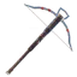 |
Арбалет | Колющий 200, Рубка 140 | Черная кузница | Туманные земли |
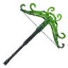 |
Корневой разрыватель | Колющий 220, Яд 10, Рубка 160 | Черная кузница | Пепельные земли |
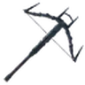 |
Разрыватель | Колющий 220, Рубка 160 | Черная кузница | Пепельные земли |
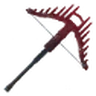 |
Ранящий разрыватель | Колющий 220, Рубка 160 | Черная кузница | Пепельные земли |
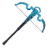 |
Штормовой разрыватель | Колющий 220, Молния 10, Рубка 160 | Черная кузница | Пепельные земли |
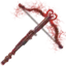 |
Громокровный арбалет | Колющий 274, Молния 45, Рубка 180 | Черная кузница | Дальний север |
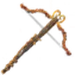 |
Нордский арбалет | Колющий 264, Рубка 180 | Черная кузница | Дальний север |
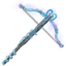 |
Огнеледяной арбалет | Колющий 232, Огонь 12, Лед 88, Рубка 180 | Черная кузница | Дальний север |
Пассивные умения¶
Узлы ветвей этого оружия в дереве пассивных умений, а также узлы и варианты мастерства, чьи бонусы называют это оружие.
Ключевые узлы (2)¶
| Название | Эффект | |
|---|---|---|
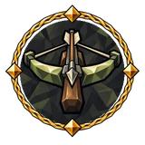 |
Железный град | ×2 loaded bolts арбалетов ×1.3 fire rate арбалетов ×0.4 урона арбалетов |
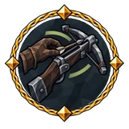 |
На ходу | +1 reload while moving ×0.4 скорости перезарядки Незаконченный текст |
Средние узлы (14)¶
| Название | Эффект | |
|---|---|---|
| Болт в просвете | 30% увеличение шанса критического удара арбалетов 10% увеличение скорости снарядов болтов 40% увеличение шанса критического удара арбалетов первым выстрелом из магазина |
|
| Болт дренга | 20% увеличение урона арбалетов 10% увеличение скорости снарядов болтов +15 Ловкости |
|
| Быстрый ворот | 10% увеличение скорости перезарядки арбалетов +15 Ловкости |
|
| Градобой | +5% скорострельности арбалета | |
| Запас осадника | 10% уменьшение расход выносливости арбалетов 25% увеличение урона арбалетов за каждый: тип болта, выпущенного за последние 10 секунд 5% увеличение урона арбалетов за каждую единицу выпущенный недавно болт |
|
| Натиск самострела | 10% увеличение скорости перезарядки арбалетов 10% увеличение отбрасывания болтов |
|
| Осадный самострел | 10% увеличение скорости перезарядки арбалетов 20% увеличение урона арбалетов |
|
| Приговор стрелка | 30% увеличение шанса критического удара арбалетов +20% урона критических ударов арбалетов |
|
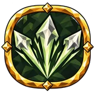 |
Расколотый щит | 10% увеличение отбрасывания болтов +1 заряжаемых болтов |
| Рука взводчика | 20% увеличение скорости перезарядки арбалетов при уклонении недавно 10% уменьшение расход выносливости арбалетов 15% увеличение fire rate арбалетов при уклонении недавно |
|
| Стальной ритм | +5% скорострельности арбалета | |
| Шаг отдачи | 25% увеличение отбрасывания болтов при критическом попадании недавно +15 Ловкости Отдача арбалета отталкивает вас на короткий шаг прочь от точки прицела. |
|
| Шлем на вертеле | +20% урона критических ударов арбалетов 10% увеличение отбрасывания болтов 40% увеличение урона критических ударов арбалетов последним заряженным выстрелом |
|
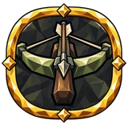 |
Щелчок затвора | 40% увеличение накопления недуга арбалетами 30% шанс мгновенной перезарядки арбалетами |
Мастерства (2)¶
| Вариант | Эффект | |
|---|---|---|
| Кувырок взводчика | Начало перезарядки арбалетами при уклонении | |
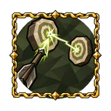 |
Пробивной заряд | +1 projectile chain арбалетов заряженными атаками |
Малые узлы¶
| Характеристика | Узлы |
|---|---|
| 4% увеличение отбрасывания болтов | 10 |
| 4% увеличение скорости перезарядки арбалетов | 7 |
| 8% увеличение урона арбалетов | 7 |
| +2% скорострельности арбалета | 7 |
| 4% уменьшение расход выносливости арбалетов | 6 |
| 4% увеличение скорости натяжения луков | 4 |
| 12% увеличение шанса критического удара арбалетов | 4 |
| 16% увеличение накопления недуга арбалетами | 2 |
Ссылаются¶
Дерево навыков¶
Средние узлы¶
| Название | Эффект | |
|---|---|---|
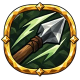 |
Сквозь вражий строй | 10% увеличение скорости снарядов +1 числа целей, которые пронзает болт арбалета |
Предметы¶
Свойства (1)¶
| Свойство | Тип | Выпадает на | С уровня предмета |
|---|---|---|---|
| +# числа целей, которые пронзает болт арбалета | Суффикс | должен быть: оружие; одно из: дубина or кирка | Не реализовано |
Упоминается в¶
История патчей¶
| Патч | Изменение |
|---|---|
| Патч 5.3.1 | У арбалетов есть магазин: дополнительные снаряды становятся заряжаемыми болтами, а шанс дополнительного снаряда бросается один раз, когда заканчивается перезарядка. Каждый выстрел выпускает один болт; удержание атаки продолжает стрельбу со скорострельностью, которая идёт от собственной перезарядки арбалета. Сбережённый болт сохраняет и боеприпас, и заряд. |
Данные из Path of Valheiman 5.3.6, извлечены 2026-10-27.